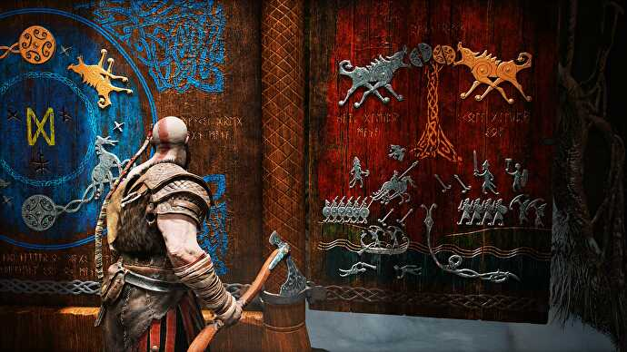

Um novo início para Kratos
Muitos anos depois de Kratos desencadear o inferno na Grécia Antiga e deixar o Olimpo de joelhos, ele vive uma vida tranquila em Midgard com a sua esposa Faye e o seu filho Atreus. O jogo começa pouco depois da morte de Faye, com Kratos e Atreus a prepararem-se para realizar o seu último desejo: espalhar as suas cinzas no pico mais alto dos nove reinos.
Antes da sua partida, um misterioso homem tatuado confronta Kratos e provoca-o agressivamente para uma luta que destrói praticamente toda a paisagem em redor. Este estranho tem poderes divinos mas no final é derrotado por Kratos, que parte o seu pescoço e atira o seu corpo de um penhasco. Com medo de que a sua casa não seja mais segura, Kratos diz a Atreus para arrumar as suas coisas.

Novas personagens, novos desafios
Na jornada para realizarem o desejo de Faye, pai e filho descobrem que o seu caminho está obstruído por uma escuridão impenetrável que só pode ser superada pela luz de Alfheim. Durante a sua aventura, eles encontram alguns personagens coloridos, como a enorme Serpente do Mundo, Jörmungandr e a misteriosa Bruxa da Floresta. A bruxa ajuda Kratos e Atreus a navegar pela névoa que bloqueia o seu caminho até ao topo da montanha.
No pico de Midgard, eles ouvem uma conversa entre o homem estranho que, supostamente, Kratos matou no início do jogo, os filhos de Thor - Magni, Modi - e Mimir. O estranho que Kratos pensava ter matado é na realidade Baldur, o deus da luz e pureza. Assim que eles se foram embora, Mimir (que está preso numa árvore) informa-os que eles estão no lugar errado e que precisam de se dirigir para Jotunheim, oferecendo-se como um guia. Para isso, Kratos viu-se obrigado a cortar a sua cabeça e levá-la à bruxa da floresta para ser reanimada.
Inicialmente, a bruxa recusa-se a reanimá-la mas acaba por ceder. Ao acordar, Mimir revela que a Bruxa é na verdade a deusa Freya, ex-esposa de Odin. Kratos não fica nada feliz com esta revelação, tendo em conta o seu passado com outros deuses. Freya e Mimir advertem Kratos de que ele deveria contar ao seu filho tudo sobre a sua divindade ou isso poderia prejudicá-lo num futuro próximo, mas Kratos sai furioso.
A jornada para Jotunheim
Na sua busca para abrir o portal para Jotunheim (que Mimir revelou como fazer), Kratos e Atreus são emboscados por Magni e Modi numa luta tensa que resulta na morte de Magni. Modi consegue fugir mas volta mais tarde para vingar a morte do seu irmão. No entanto, esta batalha terá um efeito devastador em Atreus, que entra numa espécie de coma e obriga Kratos a levá-lo de volta a Freya, a bruxa.
Freya diz a Kratos que a doença de Atreus é o resultado de Kratos nunca lhe ter dito que ele é um deus. A crença de Atreus de que ele é mortal está em conflito com a sua divindade e a fazer com que o seu corpo se desligue. Para curá-lo, Freya diz a Kratos que ele deve recuperar o coração de um troll localizado no reino dos mortos, Helheim. Mas como esse reino é extremamente frio, o seu gelado Leviathan será inútil lá. Felizmente, Kratos ainda tem as clássicas Blades of Chaos escondidas na sua casa, e ele consegue recuperar o coração.
Atreus, um novo deus
De regresso a Freya, ela consegue curar Atreus e Kratos revela-lhe a sua verdadeira natureza. Atreus torna-se arrogante e começa a agir fora de personagem quando ele deixa a sua divindade chegar-lhe à cabeça. É neste momento que eles encontram um Modi ferido, punido pelo seu pai Thor, e Atreus mata-o a sangue frio indo contra os comandos de Kratos.
No portal para Jotunheim, Kratos e Atreus são mais uma vez atacados por Baldur, destruindo o portal no processo. Enquanto estão lá, eles testemunham Baldur a ter uma visão de uma discussão passada com sua mãe, que se revela ser Freya, a bruxa. Ela amaldiçoou o filho com um feitiço de imortalidade para que ele nunca pudesse morrer. Ao ver essa luta familiar entre deuses, Atreus pede desculpas a Kratos pelo seu comportamento.
Kratos e Atreus vs Baldur e Freya
Com o portal para Jotunheim partido, Mimir revela que há outra entrada para Jotunheim mas eles precisam de encontrar o seu outro olho para se recordar dela. A serpente gigante engoliu-o, então eles pedem-lhe permissão para entrar no seu corpo para recuperá-lo. Depois de o fazerem, eles são mais uma vez atacados por Baldur.
Desta vez, Freya está também presente na luta e, quando Baldur soca Atreus, o rapaz perfura a sua mão com uma das pontas da flecha de visco, que quebra o seu feitiço de imortalidade. Baldur está em êxtase por poder sentir novamente mas Kratos e Atreus ganham a vantagem em batalha. Kratos dá a Baldur a oportunidade de viver mas ele vira toda a sua raiva contra a mãe, tentando estrangulá-la até à morte. Kratos intervém e mata Baldur. Freya jura vingança a Kratos por matar o seu filho e é neste momento que o deus da guerra conta toda a verdade do seu passado ao filho.
No reino dos gigantes
Pai e filho chegam finalmente a Jotunheim, o lugar mais alto em todos os nove reinos. No topo, eles encontram murais que representam vagamente toda a sua aventura. Os Gigantes tinham previsto toda a sua jornada e foi revelado que a a mãe de Atreus era de facto um gigante. Os murais mostram também que a sua mãe deu-lhe originalmente o nome Loki. E é aqui que acaba a história principal, com Kratos e Atreus a espalharem as cinzas de Faye no pico mais alto dos nove reinos.
Após os créditos, vemos uma cena final em que Atreus tem uma premonição de um futuro encontro com Thor, que provavelmente está um pouco irritado por Kratos ter matado os seus filhos. E é aqui que entra a história de God of War: Ragnarok.